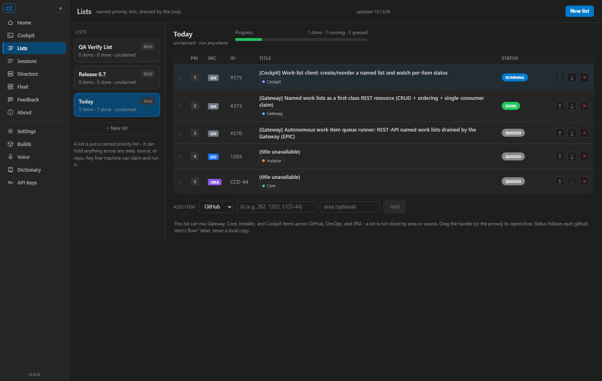
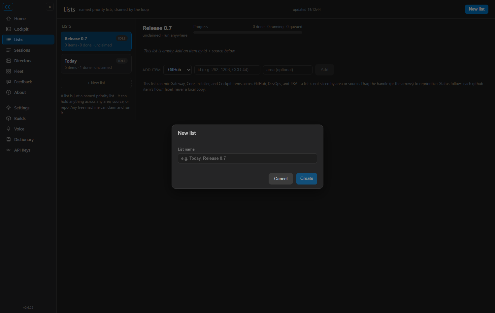
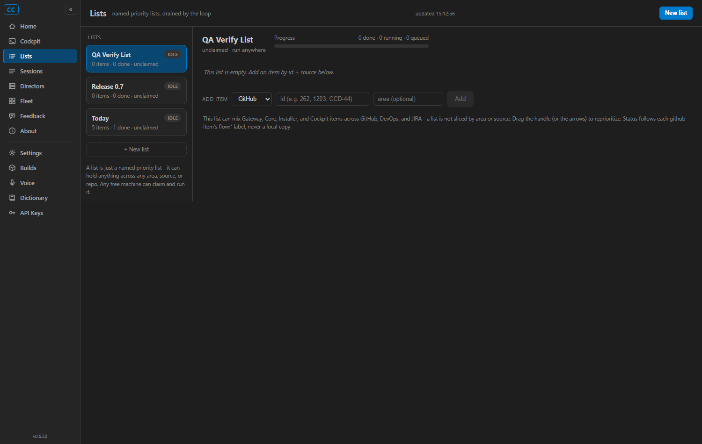
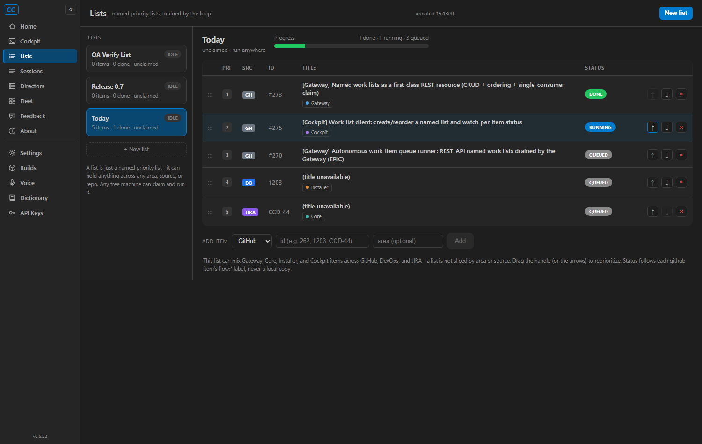
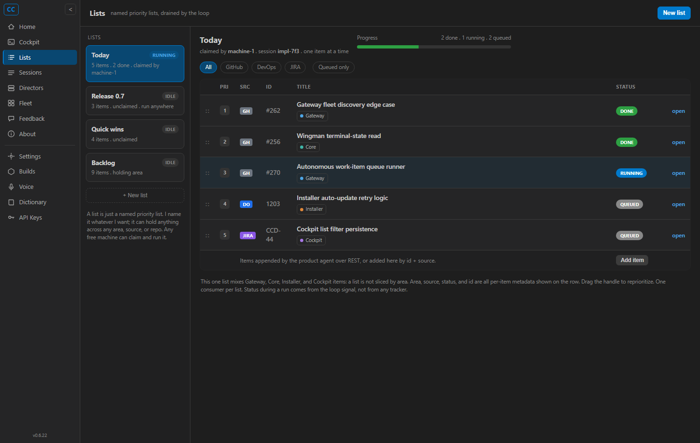

issue-275-cockpit-worklist · 2026-06-10/lists object. Every create / append / reorder went through the Gateway and was confirmed in
GET /lists / GET /lists/{name}. Per-item status is derived live from each github item's
flow:* label - proven by an actual label change flipping a badge with no separate cache. Full
solution build is clean (0 warnings, 0 errors); 12 Cockpit unit tests + 28 Gateway WorkList tests pass. These
are the QA Agent's own screenshots, not the developer's.dotnet build cc-director.sln -> Build succeeded, 0 warnings, 0 errors.127.0.0.1:7898 with an empty list store, and a dev
Cockpit on 127.0.0.1:7899 pointed at it (Cockpit__GatewayUrl). The user's own
Gateway (7878) and Cockpit (7470) were left running and untouched.POST /lists,
POST /lists/{name}/items) - so criterion 3 (REST-created list appears in the Cockpit) is genuinely independent.| # | Criterion | Expected | Actual (QA proof) | Result |
|---|---|---|---|---|
| 1 | Create a named list in the UI; appears via GET /lists |
UI create writes to the shared Gateway object | Created "QA Verify List" via the New-list modal (q-02, q-03). GET /lists immediately after
returned QA Verify List, Release 0.7, Today - the UI wrote to the shared Gateway object, not a local copy. |
PASS |
| 2 | Append + reorder; new order reflected in GET /lists/{name} |
Reorder issues the child-2 PATCH, not a local-only reorder | Clicked "Move up" on the #273 row. GET /lists/Today changed from
275,273,270,1203,CCD-44 to 273,275,270,1203,CCD-44 (q-05) - the PATCH hit the shared object.
(Append also exercised: the mixed list was assembled via the same append path.) |
PASS |
| 3 | A list created via raw REST appears in the Cockpit identically | Same name, order, per-item source/id/area | "Today" (5 items) and "Release 0.7" were created ONLY via raw REST, then rendered in the Cockpit with the identical name, order, and per-item source/id/area (q-04). | PASS |
| 4 | Row renders source badge + id + area chip + status badge; mixed list; badge follows label change | GH/DO/JIRA badges, area chips, status from flow:* |
"Today" mixes github (#275/#273/#270), devops (1203), jira (CCD-44): GH (gray) / DO (blue) / JIRA (purple)
badges, Cockpit/Gateway/Installer/Core area chips, real github titles (q-04). Status is the LIVE label:
#275=RUNNING (its real label is flow:ready-qa), #273=DONE (flow:done), #270=QUEUED. Adding flow:done
to #270 on GitHub flipped its badge QUEUED -> DONE on the next refresh (q-04 vs q-06), and the label was reverted afterward. |
PASS |
| 5 | No separate cached status that conflicts with the label | Status is always derived, never stored | Source inspection: WorkListDto/WorkListItemRef carry no status field; the Lists page
recomputes WorkItemInfo from GitHub on every 10s refresh (ResolveInfoAsync), never persisting it.
Criterion 4 proved the badge tracks the live label with no stale/cached value. |
PASS |
| 6 | Renders with no active runner; does not error when child 3 absent | queued/done-only lists render cleanly | No queue runner (#274) was running. The empty "QA Verify List" rendered "This list is empty..." (q-03) and the queued/done "Today" rendered without error (q-04). The Cockpit console showed a clean WebSocket circuit, no errors. | PASS |
| 7 | Visually matches the canonical mockup + VisualStyle.md | Side-by-side parity | Built page (q-04) vs canonical mockup (q-07): same nav rail, list-card column (name + RUNNING/IDLE tag + meta), items table columns (PRI/SRC/ID/TITLE/STATUS + actions), source/area/status colors, and progress strip. Dark theme uses the shared cockpit tokens (VS Code palette per VisualStyle.md: #1E1E1E / #252526 / #007ACC). Mockup-only extras (filter chips, per-row "open" link) are presentational and outside the acceptance criteria; core layout matches. | PASS |
github #275/#273/#270 with real titles + GH badges, devops 1203 (DO), jira CCD-44 (JIRA); area chips
Cockpit/Gateway/Installer/Core; status RUNNING/DONE/QUEUED derived live from flow:*; progress "1 done / 1 running / 3 queued".



#273 moved to priority 1 via the UI "Move up" arrow; GET /lists/Today confirmed the new order
273,275,270,1203,CCD-44 in the shared object.

After gh issue edit 270 --add-label flow:done, #270's badge flipped QUEUED -> DONE on the next
refresh and progress updated to "2 done / 1 running / 2 queued". The label was reverted immediately afterward.

dotnet build cc-director.sln Build succeeded. 0 Warning(s) 0 Error(s) dotnet test src/CcDirector.Cockpit.Tests Passed! - Failed: 0, Passed: 12, Skipped: 0 (flow:* label -> status mapping pinned) dotnet test src/CcDirector.Gateway.Tests --filter WorkList Passed! - Failed: 0, Passed: 28, Skipped: 0 (the #273 /lists surface this client consumes is intact)
Negative sweep of every screenshot: no broken layout, no error banner, no stray element; empty lists render
their empty-state, not an error. The Lists page is a pure client (consumes the existing #273 /lists surface
+ reads public GitHub issue metadata) - no architecture/security drift, no docs/cencon/ update needed.
Verdict: VERIFIED - all 7 acceptance criteria met. Recommend flow:done + merge.